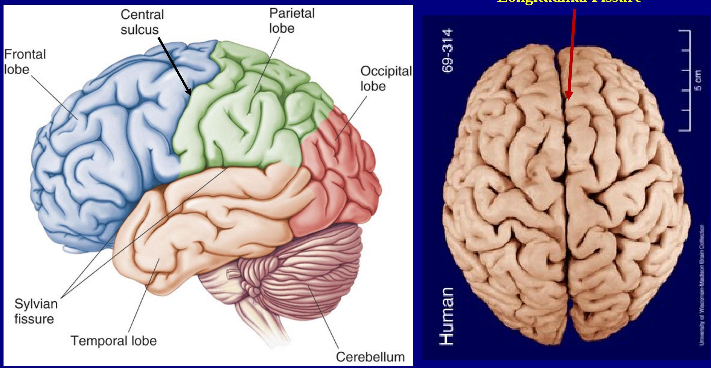

CEREBRAL TOPOGRAPHY AND CORTICAL FUNCTIONAL AREAS
Objectives
- To review the features of the cerebral cortex
- To understand the functional areas of cerebral cortex
- To understand the basic connection fibres of the brain
- To name some pathologies associated with the cerebral cortex
Case 1
- A 52 yr AA hypertensive and diabetic, man awakens and can not express himself. His entire right side is numb and weak. Neurologic exam shows a right hemiparesis (face, arm and leg are equal). Hemianesthesia is present and there is a Broca's aphasia.
- What is the anatomical basis for this presentation?
Case 2
- A 68 year old man with non-valvular atrial fibrillation awakens one day and notices difficulty seeing on his right side; he has no difficulty with speech, walking, strength, sensation or coordination or headache. The neurologic exam reveals a right homonymous hemianopsia.
- What is the anatomical basis for this presentation?
Case 3
A 40 year old is shot in the head through the left orbit. He undergoes bifrontal craniotomy for bullet removal and brain debridement. Following surgery, he is alert and attentive with no aphasia or memory impairment. He has no motor coordination, gait, or hearing disturbance. He makes an uneventful recovery but his wife calls the neurosurgeon very upset. He refuses to return to work or pay any bills, goes to bars, refuses to go to church and sexually abuses a 6 year old girl and is arrested for indecent exposure.
What is the anatomical basis for this presentation?
Case 4
- A 7 year old boy falls off a swing and hit his head on a rock and is knocked unconscious for ten minutes. Upon awakening he is neurologically intact but does not remember the accident. Several hours later, he develops a headache, vomits and develops right sided weakness.
- What is the anatomical basis for this presentation?
Case 5
- A 54-yr woman was seen by a neurologist because her sister had noticed a sudden change in her behavior. The patient stated that after waking up about a week ago, she noticed that the left side of her body did not feel as if it belonged to her. Later, the feeling worsened, and she became unaware of the existence of her left side. Her sister told the neurologist that the patient now neglects to wash the left side of her body.
- What is the anatomical basis for this presentation?
Introduction
External features of cerebrum
Longitudinal Fissure
Lobes of the brain
Insular cortex
Lateral surface gyri
Medial surface of the cerebrum
Inferior surface gyri
Internal features of the cerebrum
Broadman's cytoarchitechonic areas

Lateral surface
Medial surface
Specialized cortical areas
| Brodmann's Area | Name | Function | Connections | |
|---|---|---|---|---|
| Frontal lobe: | 4 | Primary motor cortex | Voluntary muscle activation | Contributes to corticospinal tract |
| 6 | Premotor cortex | |||
| 8 | Frontal eye field | Eye movements | Sends projections to lateral gaze center (paramedium pontine reticular formation) | |
| 44, 45 | Broca's area | Motor aspects of speech | Projects to Wernicke's area via arcuate fasciculus | |
| Parietal lobe: | 3, 1, 2 | Primary sensory cortex | Somatosensory | Input from VPL, VPM |
| Occipital lobe: | 17 | Striate cortex = primary visual cortex | Processing of visual stimuli | Input from lateral geniculate only Projects to areas 18, 19 |
| 18, 19 | Extrastriate = visual association cortex | Processing of visual stimuli | Input from area 17 | |
| Temporal lobe: | 41 | Primary auditory cortex | Processing of auditory stimuli | Input from medial geniculate |
| 42 | Associative auditory cortex | |||
| 22 | Wernicke's area | Language comprehension | Inputs from auditory association cortex, visual association cortex, Broca's area (via arcuate fasciculus) |
Homonculus
Functional classification of the cortex
- Motor cortex
- Sensory cortex
- Association corte
Association cortices
- Three main association are
- parieto-occipitotemporal are
- Prefrontal association area
- Limbic association area
A. Prefrontal association
- serve as an "executive part of the cortex
- reasoning and abstraction
- monitoring of behavior to ensure adaptive actions
- inhibiting maladaptive behavior;
- prioritizing and sequencing actions
- problem solving
Phineas Gage
B. Limbic Association Area
- Location:
- anterior pole of the temporal lobe
- ventral portion of the frontal lobe
- cingulate gyrus
- Concerned with behavior, emotions, and motivation
C. Parieto-occipitotemporal Association Area
- Analysis of the Spatial Coordinates of the Body
- Language Comprehension area.
- Initial Processing of Visual Language (Reading) area
- Area for Naming Objects.
Language & Speech

Aphasia
| Type | Naming | Fluency | Auditory Comprehension | Repetition | Location of Lesion |
|---|---|---|---|---|---|
| Aphasias with impaired repetition | |||||
| Broca's | ± | - | + | - | Broca's area (area 44 and 45) |
| Wernicke's | - | + | - | - | Wernicke's area (area 22) |
| Global | - | - | - | - | Large left hemispheric lesions |
| Conduction | ± | + | + | - | Arcuate fasciculus |
An 84 year old woman was found with a dense right hemiparesis and global aphasia.
Dyslexia - inability to read
Typical Brain / Dyslexic Brain comparison
Agnosia - difficulty in identification or recognition
- caused by disturbances in the association cortex
- Astereognosis: failure of tactile recognition of objects (parietal lesions)
- Prosopagnosia: Inability to recognize faces (temporoccipital lesions)
Hemineglect
- failure to respond to stimuli in one half of space
- contralateral to a hemispheric lesion
- May involve visual, tactile, and auditory stimuli
- Common in parietal lobe lesions
Traumatic brain injury
Tumors
CEREBRAL DOMINANCE
- Dominant hemisphere
- Handedness, language and speech
- Newborns have equipotential capabilities
- Dominance develops during childhood
- Neuroplasticity with injury
CONNECTING FIBRES OF THE BRAIN
Association fibres
Commissural fibres
EVOLUTION OF THE BRAIN
- Manual dexterity
- Learning and memory
- Cognition and intelligence
- Language
Case 1
- A 52 yr AA hypertensive and diabetic, man awakens and can not express himself. His entire right side is numb and weak. Neurologic exam shows a right hemiparesis (face, arm and leg are equal). Hemianesthesia is present and there is a Broca's aphasia.
- What is the anatomical basis for this presentation?
Case 2
- A 68 year old man with non-valvular atrial fibrillation awakens one day and notices difficulty seeing on his right side; he has no difficulty with speech, walking, strength, sensation or coordination or headache. The neurologic exam reveals a right homonymous hemianopsia.
- What is the anatomical basis for this presentation?
Case 3
A 40 year old is shot in the head through the left orbit. He undergoes bifrontal craniotomy for bullet removal and brain debridement. Following surgery, he is alert and attentive with no aphasia or memory impairment. He has no motor coordination, gait, or hearing disturbance. He makes an uneventful recovery but his wife calls the neurosurgeon very upset. He refuses to return to work or pay any bills, goes to bars, refuses to go to church and sexually abuses a 6 year old girl and is arrested for indecent exposure.
What is the anatomical basis for this presentation?
Case 4
- A 7 year old boy falls off a swing and hit his head on a rock and is knocked unconscious for ten minutes. Upon awakening he is neurologically intact but does not remember the accident. Several hours later, he develops a headache, vomits and develops right sided weakness.
- What is the anatomical basis for this presentation?
Case 5
- A 54-yr woman was seen by a neurologist because her sister had noticed a sudden change in her behavior. The patient stated that after waking up about a week ago, she noticed that the left side of her body did not feel as if it belonged to her. Later, the feeling worsened, and she became unaware of the existence of her left side. Her sister told the neurologist that the patient now neglects to wash the left side of her body.
- What is the anatomical basis for this presentation?
SUMMARY
- To review the features of the cerebral cortex
- To understand the functional areas of cerebral cortex
- To understand the basic connection fibres of the brain
- To name some pathologies associated with the cerebral cortex
The End
The End